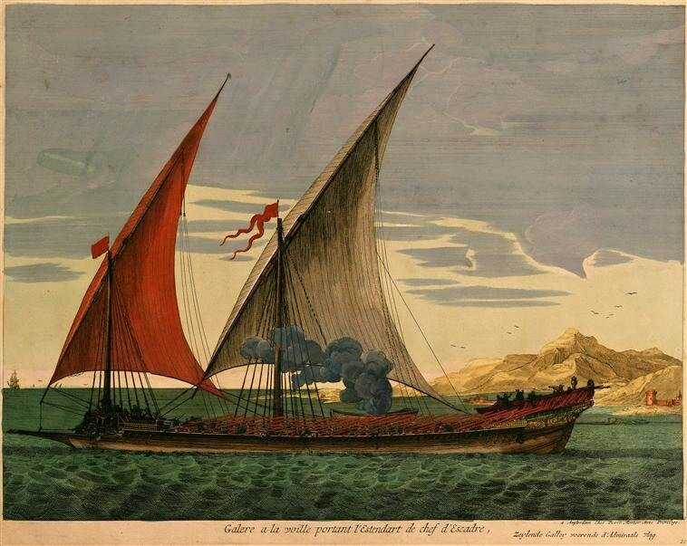
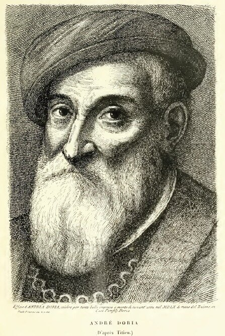
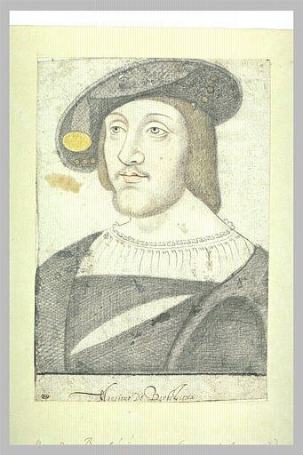
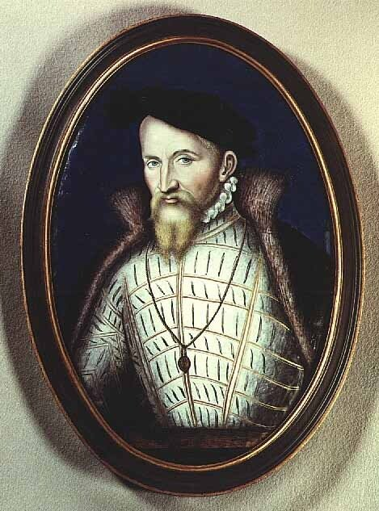
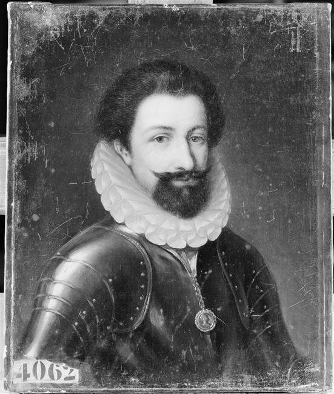
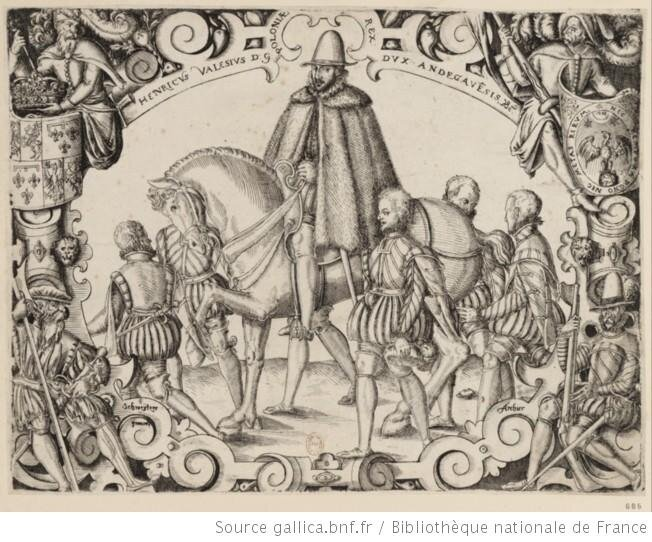
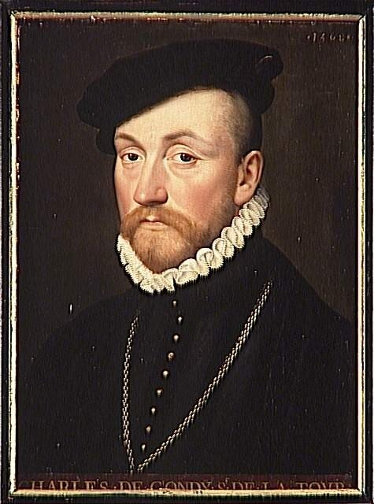

Генерал галер Антуан Эскален Дезэмар (Antoine Escalin des Aimars), прозванный «капитан Полен» ( Paulin или Polin), барон де Лагар (de la Garde Adhémar (Drôme)), принадлежит к тем людям, которые сыграли большую роль во внешней политике Франции шестнадцатого века. То, что имя его не очень известно в популярной литературе нашего времени можно объяснить просто: французские историки вообще не любят афишировать период близких отношений Франции с Османской империей и неохотно вводят в пантеон героев своей истории деятелей того времени. Поэтому военная история Франции XVI века – это легендарный солдат, «рыцарь без страха и упрека» Пьер Террайль де Баярд, а не «капитан Полен», возглавивший посольство Франции при дворе султана Сулеймана. Но мы сейчас занимаемся не легендами, а историей галер, поэтому личность барона де Лагарда, несомненно, нам интересна.

Галера под парусами под флагом адмирала. Германия, Берлин, Kunstbibliothek
Перед рассказом о бароне де Лагарде скажем несколько слов об институте Генералов галер Франции. Начальный этап этой истории мы уже рассмотрели ранее. Там же поместили краткий рассказ о первом генерале галер Франции Прежане де Биду и привели один из эпизодов биографии барона де Лагарда. В дальнейшем говорили о генералах галер Мальтийского ордена. Это смешение оправданно исторически: много случаев, когда главы галерных флотов Мальты и Франции занимали эти посты в течение своей жизни и в той, и в другой стране. Список мы уже приводили. Что касается генералов галер Франции, то сейчас приведем список лиц, занимавших эту должность в рассматриваемую нами эпоху.
1. Жан де Шамбрийяк (Jean de Chambrillac), был первым, для кого король Франции учредил должность капитан-генерала галер, поручив ему командовать галерами и другими судами, объединенными в одну эскадру на период войны с Генуей в 1410 г. После этого звание генерала галер как командующего объединенными галерными силами на Средиземном море не присваивалось до конца XV века. И хотя имя это в общем ряду генералов галер Франции стоит особняком, по традиции он возглавляет список.
2. Прежан де Биду (Prégent de Bidoux), рыцарь ордена Св. Иоанна Иерусалимского; был назначен на должность генерала галер Франции в 1497 году. Ушел с этого поста, чтобы участвовать в боевых действиях своего ордена, в числе которых была и осада Родоса 1522 года. Был первым средиземноморским командиром галер, который вышел со своими кораблями в Атлантику.
3. Бернарден де Бо (Bernardin de Baux), также рыцарь ордена иоаннитов, генерал галер с 1518 года, занимал этот пост только в течение одного года.
4. Бертран д'Орнесан (Bertrand d'Ornesan), шевалье, сеньор д'Астарак барон де Сен-Бланкар и т.д., генерал галер с 1521 года.
5. Андре Дориа (André Doria), генуэзский аристократ, стал генералом галер перед 1525 годом. В дальнейшем перешел на службу злейшему врагу Франции императору Карлу V.

Андре Дориа (Тициан)
6. Антуан де Ларошфуко (Antoine de la Rochefoucauld), сеньор де Барбезье, назван генералом галер в 1528 году.

Antoine de la Rochefoucauld, seigneur de Barbezieux, général des galères (Лувр)
7. Антуан Эскален Дезэмар (Antoine Escalin-des-Aimars), baron de la Garde, кавалер ордена Св.Михаила, губернатор Прованса. Генералом галер стал в 1544 г. Затем был смещен с поста. Восстановлен в 1566.
8. Леон Строцци (Léon Strozzi), рыцарь ордена иоаннитов, стал генералом галер в 1547 году, после смещения барона де Лагара. [Губернатор Прованса Claude de Savoie, comte de Tende, 18 mai 1547.]
9. Франсуа де Лоррен (François de Lorraine), герцог де Гиз, генерал галер Мальты. Звание генерала галер Франции получил в 1557 году. Умер в 1563 г.

François de Lorraine, duc de Guise (1520 - 1563) Léonard LIMOSINЛувр, (эмаль, Лимож)

René de Lorraine, marquis d'Elbeuf (1536-1566), général des galères. Albrier Joseph. Версальский дворец
11.Анри д'Ангулем (Henri d'Angoulême), гран-приор Франции, побочный сын короля Генриха II. Принял должность генерала галер в 1578 году, после смерти барона де Лагарда. В этом же году стал губернатором Прованса.

Henri de Valois, duc d'Anjou
12. Шарль де Гонди (Charles de Gondi), сеньор де ля Тур, назначен генералом галер в 1578 году. В этом же году умер.

Charles de Gondi, seigneur de La Tour. Версаль
В дальнейшем пост генерала галер оставался в руках семейства де Гонди на протяжении 57 лет, до 1635 года. Затем главную морскую должность на Средиземном море захватило семейство де Виньеро (de Vignerod), Но об этом периоде истории галерного флота Франции мы будем говорить позже.
Не всегда между приведенными нами датами существует последовательное соответствие. Это объясняется тем, что в периоды, когда генерал галер не был назначен королем, его обязанности выполнял губернатор Прованса.
Рассказ продолжим в следующий раз.